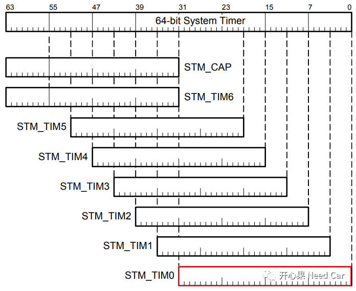
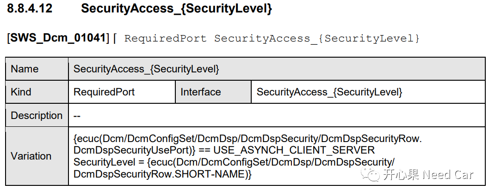

把早期rand()/srand()的讨论视为历史实现案例。随机数“看起来均匀”或通过统计测试，不足以证明它适合生成密钥或安全挑战。
NIST SP 800-22开心果 Need Car · 2022-03-11T18:30:00+08:00 · 微信原文
诊断服务测试中，其中有一项测试就是种子（Seed）的随机性测试，该测试针对$27服务。很多时候，我们的工程项目是基于以前的Base搭建，所以很多功能可以直接移植，这样做虽然方便，但是很多东西不去动动脑筋，只能知其然，而不知其所以然。本文聊一聊，ECU如何产生随机种子。
产生种子随机性的方法一般有如下手段：
使用C库函数rand()和srand()
使用HSM提供的真随机数接口函数
本文主要聊一下使用C库函数rand()和srand()方式，ECU如何产生随机Seed。
先明确一个问题：为什么要种子随机？我们知道，$27服务存在的目的就是为了确保车辆ECU的安全，防止非目标人员的非法访问而存在的，如果任何人都可以通过诊断指令对车辆ECU进行操作，那么带来的潜在风险，将是我们所无法预估的。为了验证操作人员（比如：4S店的售后维修人员）的合法性，在对车辆ECU进行诊断检查时，需要验证其提供的Key是否有效，而产生有效Key的前提需要ECU反馈给上位机一个随机的Seed，且Seed每次都不应相同，只有Seed随机才能确保每次产生的Key不同。Key由Seed通过特定算法计算得到，每家OEM的Key算法均不同，甚至每款车型的Key算法都不一样。如果你发现有两家OEM的Key算法一样，那纯属巧合！
生成种子的目的其实就是为了产生独一无二的密钥(Key)，以便解锁ECU。
一般为了省事，Bootloader和Application中，可能会使用同一套Key算法。当然，安全的角度，最好不要一样。
既然Seed是产生Key的关键一环，那么ECU如何才能产生随机Seed，且不重复呢？前文说了，本文通过C库函数rand()和srand()产生随机Seed。严格地说，此方法也不能保证Seed不会重复，只是将概率降到了微乎其微，测试通过还是没有问题的，在不上Security Boot的前提下，多数厂家也都是这样实现的。真随机Seed，还是需要HSM。
认识srand()和rand()
srand()是随机数发生器的初始化函数，函数原型如下所示：
void srand(unsigned int seedForRand) srand()的作用主要是为rand()函数提供一个随机的种子，注意：srand()提供的种子并不是ECU产生的Seed，ECU要产生的Seed实质是rand()生成的随机数。
如果srand()的形参seedForRand每次提供的都一样，那么rand()之后产生的随机数也会是一样的，比如：使用srand(10)为rand()提供随机种子，每次运行如下进程，rand()都会产生同样的随机数。
示例：
int main(){/* 初始化随机数发生器 */srand((unsigned) 10);/* 输出随机数，即ECU所需要的Seed */printf("Seed = 0x%x\n", rand());getchar();return(0);}
第一次运行结果：
Seed = 0x47第二次运行结果：
Seed = 0x47第三次运行结果：
Seed = 0x47......
所以，如果每次ECU启动测试种子随机性时(提示：需要脚本测试，控制$27服务种子请求的时机，尽可能确保请求时间相同)，srand()的参数seedForRand都一样，rand()就会产生一样的随机数。产生一样的随机数是不符合我们需求的，我们需要确保rand()产生的随机数不一样，进而ECU才能产生不同的Seed。为了防止产生的随机数相同，就必须确保srand()每次传入的参数值不同。
一般会使用系统时间对随机数发生器进行初始化，因为系统时间一直运行，且每时每刻都不同。
示例：
int main(){time_t t;/* 初始化随机数发生器 */srand((unsigned) time(&t));/* 输出随机数，即ECU所需要的Seed */printf("Seed = 0x%x\n", rand());getchar();return(0);}
第一次运行结果：
Seed = 0x291d第二次运行结果：
Seed = 0x29e4第三次运行结果：
Seed = 0x6bba......
注意，在车辆嵌入式开发中，ECU获取系统时间相对比较复杂，多数时间参数要从其他地方获取，比如：Android。所以该方式鲜少使用（至少我没用过）。那如何才能给srand()函数提供不同的形参seed呢？
系统定时器给srand()函数传参

系统定时器用处很多，后面我们聊聊它，可能会给你解决项目问题带来意想不到的惊喜！
对于$27服务，获取Seed子服务所调用的接口，在Autosar中有描述，如下所示：

FUNC(Std_ReturnType, DCM_Server_CODE) SecurityAccess_Level_XXX_Unlocked_GetSeed(Dcm_OpStatusType OpStatus, P2VAR(uint8, AUTOMATIC, RTE_DCM_SERVER_APPL_VAR) Seed, P2VAR(Dcm_NegativeResponseCodeType, AUTOMATIC, RTE_DCM_SERVER_APPL_VAR) ErrorCode){#define XXX_SEEDNUMBER 4uint8 index;Std_ReturnType ret = RTE_E_INVALID;/* 获取STM_TIM0寄存器的Tick值：STM_TIM0_VALUE */uint32 tick = STM_TIM0_VALUE;srand(tick);if(Seed != NULL_PTR){for(index = 0; index < XXX_SEEDNUMBER; index++){/* 填充Seed，即ECU响应所需的随机Seed */Seed[index] = (uint8)rand();}XXX_SetDeed(seedValue);ret = RTE_E_OK;}return ret;}
提示：
既然有Seed请求，就会有Key的对比，同样的，可以根据Autosar规范配置$27服务的密钥验证接口，即Key验证。
有规范接口就别手写！
参考资料
AUTOSAR_SWS_DiagnosticCommunicationManager.pdf
Infineon-AURIX_TC3xx_Part2-UserManual-v01_00-EN.pdf
往期精彩回顾